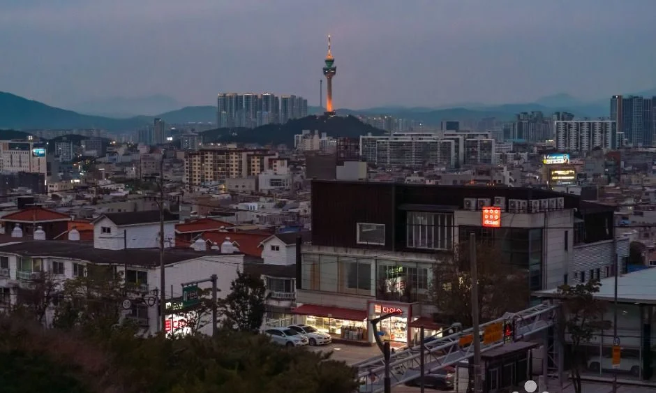
▲ 해 질 녘으로 보이는 하늘 아래 시가지 너머의 83타워. 촬영 일시는 자료에 없다 ⓒ 한국관광공사 · 공공누리 제1유형
"이월드 야경 보러 가는데 종일권 49,000원을 다 내야 할까, 83타워 전망대는 또 얼마일까?" 야경만 보고 싶은 날일수록 요금표와 해 지는 시각이 따로 놀아 헷갈린다. 이 글은 2026년 10월 24일 기준으로 이월드 공식 사이트의 운영시간·이용요금·주차·교통 안내를 렌더링된 화면 그대로 확인하고, 한국천문연구원의 대구 일몰 값과 맞춰 시간표를 만들었다. 결론부터 말하면 야간 자유이용권은 17:00부터인데 10월 24일 일몰은 17:39라서, 17시에 들어가도 해가 지기까지 39분이 남는다. 이월드 운영시간 공식 안내 바로가기
💡 먼저 결론
이월드의 10월 공식 운영시간은 평일 10:00~21:00, 토·일 10:00~22:00이고, 11월 달력에는 아직 시간이 표시되지 않았다. 어른 요금은 종일 자유이용권 49,000원, 17:00 이후 야간 자유이용권 35,000원이며, 83타워 전망대(77층)·전시관(76층)은 따로 18,000원이다. 올해 겨울 일루미네이션·빛 축제에 대한 공식 공지는 확인하지 못해 일정을 쓰지 않았다.
1. 이월드 10월 운영시간은 평일 21시·주말 22시, 83타워는 11시에 열린다
이월드는 평일 10:00~21:00, 토·일 10:00~22:00으로 표기돼 있고, 83타워 전망대는 월~금 11:00~21:00, 토~일 11:00~22:00이다. 두 시설 모두 오늘(10월 24일, 토요일)은 22시까지이므로 야경 시간대를 가장 길게 쓸 수 있는 요일은 주말이다.
| 구분 | 이월드(공식 운영시간 달력) | 83타워 전망대(77층) |
|---|---|---|
| 평일(월~금) | 10:00~21:00 | 11:00~21:00, 입장·매표 마감 30분 전(20:30) |
| 토·일 | 10:00~22:00 | 11:00~22:00, 입장·매표 마감 30분 전(21:30) |
| 10월 5일(월)·9일(금) | 10:00~22:00으로 표기 | 공휴일 운영시간은 공식 페이지에 따로 적혀 있지 않음 |
| 10월 1일(목) | 달력에 시간 표시 없음 | — |
| 11월~2027년 1월 | 달력에 날짜만 있고 시간 미표시(2026-10-24 확인) | 확인하지 못함 |
평일과 주말의 폐장 시각이 한 시간 다른 이유는 공식 자료에 없다. 이월드 공식 사이트 첫 화면의 오늘 운영시간 표시도 10:00~22:00이다. 83전망대 공식 안내 바로가기
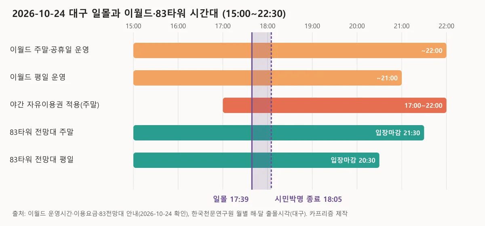
▲ 10월 24일 일몰(17:39)과 시민박명 종료(18:05) 위에 이월드·야간권·83타워 전망대 시간대를 겹친 도표. 막대 길이는 15:00 이후만 표시했다. 카프리즘 제작, 출처=이월드 공식 사이트·한국천문연구원
2. 종일권 49,000원 vs 야간권 35,000원 — 17시 이후면 얼마나 아낄까
어른 기준으로 야간 자유이용권은 종일권보다 14,000원(약 28.6%) 싸다. 야간권은 평일·주말 모두 17:00부터 폐장 시간까지 적용된다.
| 구분 | 종일 자유이용권 | 야간 자유이용권 | 차액(카프리즘 계산) | 절감률(카프리즘 계산) |
|---|---|---|---|---|
| 어른(대학생 이상) | 49,000원 | 35,000원 | 14,000원 | 약 28.6% |
| 청소년(14~19세) | 44,000원 | 33,000원 | 11,000원 | 25.0% |
| 어린이(36개월~13세) | 39,000원 | 33,000원 | 6,000원 | 약 15.4% |
어린이 차액이 어른의 절반도 안 되는 것은 야간권 가격이 청소년·어린이 모두 33,000원으로 같게 매겨져 있기 때문이다. 종일권 비고란에는 "83타워 전망대, 아이스링크 주중 할인 혜택"이 적혀 있다.
| 항목 | 공식 안내 |
|---|---|
| 자유이용권 범위 | 입장료가 포함된 가격. 주차요금·코인시설·83타워 일부 시설·시즌 이벤트 시설은 별도 |
| 야간권 할인 제한 | 타 할인 혜택과 중복 사용 불가 |
| 나이 기준 | 주민등록증상 나이 기준(만 나이 아님). 어린이 36개월~13세, 청소년 14~19세 |
| 임산부·경로자 | 서류 지참 시 주간 자유이용권 25,000원 |
| 35개월 이하 | 무료입장(티켓 구매 시 놀이기구 이용 가능, 83케이블카·회전목마 무료) |
| 반입 불가 | 개인 썰매·전동자동차·스쿠터·유아 자전거·퀵보드·애완견 |
공식 요금표에는 자유이용권과 83타워 요금만 있고, 입장만 하는 별도 요금은 보이지 않는다. 야간권 시작 시각을 구매 시각으로 보는지 입장 시각으로 보는지는 요금표에 적혀 있지 않아 현장 확인이 필요하다. 이월드 이용요금 공식 안내 바로가기
3. 83타워 전망대 18,000원 — 자유이용권이 있으면 얼마가 되나
83타워 77층 전망대와 76층 전시관은 어른(14세 이상) 18,000원, 어린이(36개월~13세)·경로(65세 이상) 14,000원이다. 요금표는 "자유이용권 본인 50% 할인(패키지권 제외, 대인 기준)"과 "장애인·국가유공자 동반 1인 50% 할인(패키지권 제외)"을 함께 안내한다.
| 조합 | 계산 | 합계 | 근거 상태 |
|---|---|---|---|
| A. 종일권 + 전망대 50% 할인 | 49,000 + 9,000 | 58,000원 | 할인은 요금표에 명시 |
| B. 야간권 + 전망대 정가 | 35,000 + 18,000 | 53,000원 | 할인 미적용 가정 |
| C. 야간권 + 전망대 50% 할인 | 35,000 + 9,000 | 44,000원 | 야간권에도 적용되는지 공식 표기 없음 |
| D. 종일권 + 전망대 정가 | 49,000 + 18,000 | 67,000원 | 할인을 받지 못할 때 |
같은 전망대인데 조합에 따라 최대 23,000원(D와 C의 차이)이 벌어지는 것은 자유이용권 소지 할인이 야간권에도 적용되는지에 따라 달라지기 때문이다. 야간권은 "타 할인 혜택과 중복 사용 불가"로 적혀 있어 C 조합이 가능한지는 이월드(070-7549-8112)에 확인해야 한다.
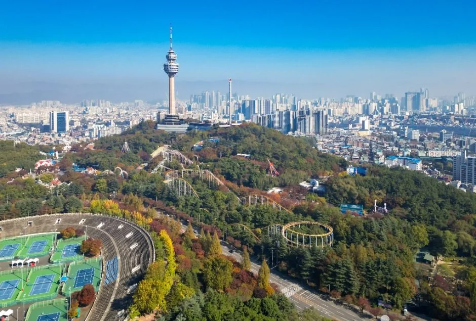
▲ 단풍이 든 숲 위로 83타워와 대구 시가지가 보이는 조망. 촬영 연도는 자료에 없다. ⓒ 한국관광공사 · 공공누리 제1유형
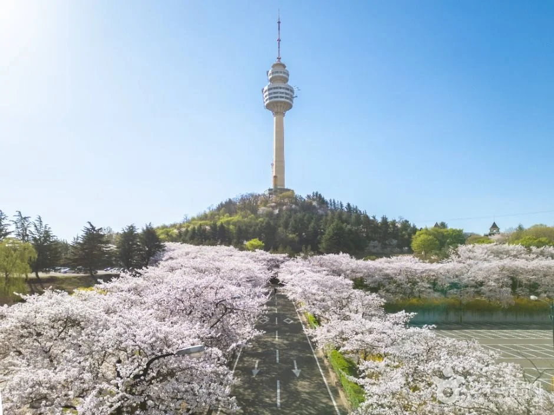
▲ 벚꽃 너머로 보이는 83타워. 벚꽃이 보이는 봄 사진이며 촬영 연도는 자료에 없다. ⓒ 한국관광공사 · 공공누리 제1유형
전망대 매표소는 4층, 전망대는 77층이다. 아이스링크(2층)도 같은 요금표에 있다.
| 구분 | 평일 | 주말 |
|---|---|---|
| 일반 어른·청소년 | 12,000원 | 13,500원 |
| 일반 어린이 | 10,000원 | 11,000원 |
| 연간회원권 어른·청소년 / 어린이 | 6,000원 / 5,000원 | 7,000원 / 6,000원 |
| 자유이용권·스케이트 소지자 어른·청소년 / 어린이 | 8,500원 / 7,000원 | 9,000원 / 7,500원 |
요금표에는 안전모·장갑 착용, 발 사이즈 180mm 이상 이용 기준, 문의 전화 053-620-0494가 적혀 있다. 83타워 공식 아이스링크 안내(2026-10-24 확인)의 영업시간은 평일·일요일 11:00~18:30, 토요일·공휴일 11:00~19:30이고 영업 30분 전에 입장·매표가 마감된다.
| 구분 | 영업시간 | 입장·매표 마감 | 17:00 이후 링크 이용 가능(계산) |
|---|---|---|---|
| 평일·일요일 | 11:00~18:30 | 18:00 | 입장은 최대 1시간, 영업 종료까지 90분 |
| 토요일·공휴일 | 11:00~19:30 | 19:00 | 입장은 최대 2시간, 영업 종료까지 150분 |
링크가 이월드 폐장(21:00·22:00)보다 훨씬 일찍 닫는 만큼, 스케이트를 타고 야경까지 보려면 평일보다 토요일이 낫다. 다만 올해 링크 개장·폐장 기간은 공식 안내에 적혀 있지 않아 확인하지 못했고, 토요일 17:00에 들어가도 야간권 이용이 끝나는 시간을 따로 계산해야 한다.
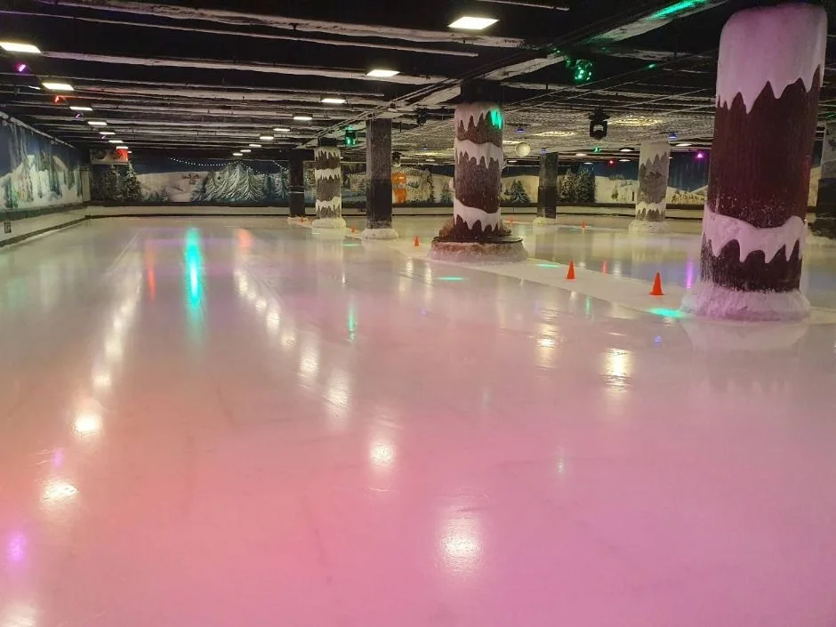
▲ 83타워 아이스링크 실내. 촬영 시기는 자료에 없다. ⓒ 한국관광공사 · 공공누리 제3유형(변경금지)
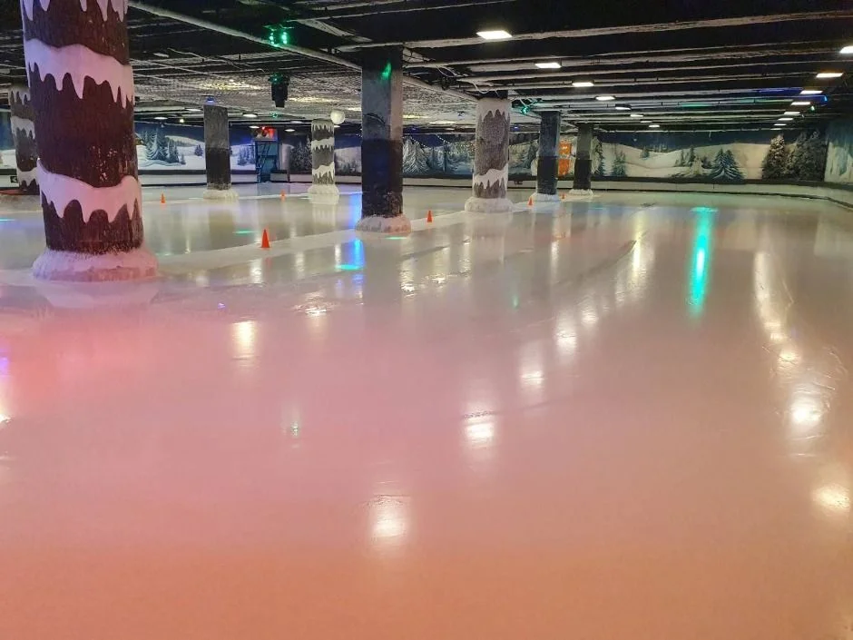
▲ 사탕 모양 장식 기둥이 있는 실내 링크 전경. 촬영 시기는 자료에 없다. ⓒ 한국관광공사 · 공공누리 제3유형(변경금지)
4. 10월 24일 일몰 17:39, 완전한 어둠은 18:05 — 10월부터 2월까지 일몰 시각표
한국천문연구원의 대구 값으로 10월 24일 일몰은 17:39, 해가 진 뒤 하늘이 어두워지는 기준인 시민박명 종료는 18:05다. 17:00에 시작하는 야간권과 일몰 사이의 간격은 계절에 따라 12분에서 52분까지 변한다.
| 날짜 | 일몰 | 시민박명 종료 | 17:00~일몰(계산) | 17:00~시민박명 종료(계산) |
|---|---|---|---|---|
| 2026-10-24(토) | 17:39 | 18:05 | 39분 | 65분 |
| 2026-10-31(토) | 17:31 | 17:58 | 31분 | 58분 |
| 2026-11-15(일) | 17:19 | 17:46 | 19분 | 46분 |
| 2026-12-01(화) | 17:12 | 17:40 | 12분 | 40분 |
| 2026-12-20(일) | 17:15 | 17:43 | 15분 | 43분 |
| 2027-01-15(금) | 17:34 | 18:02 | 34분 | 62분 |
| 2027-02-01(월) | 17:52 | 18:19 | 52분 | 79분 |
12월 초에 간격이 가장 짧은 것은 대구의 일몰이 17시 12분 안팎으로 가장 일찍 지는 시기이기 때문이고, 이때는 17시에 들어가면 12분 만에 해가 진다. 천문연 값은 관측지 고도 0m 기준 계산값이라 전망대에서 보이는 실제 해넘이는 소폭 다를 수 있다. 한국천문연구원 월별 해·달 출몰시각 바로가기
5. 일몰 전에 77층에 오르려면 — 토요일 야경 동선 시간표
야간권 시작(17:00)에 맞춰 입장하고 17:15쯤 전망대 매표소(4층)에 가면 일몰 24분 전에 77층에 올라 해넘이와 시민박명까지 이어서 볼 수 있다. 아래는 공식 운영시간을 바탕으로 카프리즘이 짠 구성 예시이고, 구간별 이동 시간은 공식 수치가 없어 적지 않았다.
| 시각 | 할 일 | 근거·주의 |
|---|---|---|
| 16:30 전후 | 두류역 15번 출구에서 도보로 이월드 도착 | 이월드 교통안내: 도보 5분. 주말·공휴일은 주차장이 혼잡해 대중교통 권장 |
| 17:00 | 야간 자유이용권 적용 시작 | 구매·입장 기준 시각은 현장 확인 |
| 17:15 전후 | 83타워 4층 매표소에서 전망대 표 구매 후 77층으로 | 주말 11:00~22:00, 매표 마감 21:30 |
| 17:39 | 일몰 | 한국천문연구원 대구 값 |
| 18:05 | 시민박명 종료, 도심 불빛이 본격적으로 켜지는 시간대 | 한국천문연구원 대구 값 |
| 18:10~20:00 | 파크 안 야간 이용, 저녁 식사 | 소요 시간은 공식 수치 없음 |
| 20:00 | 토요일 공연·불꽃쇼 시간대 | 공연&이벤트: 다크 원더랜드 매주 토 20:00(불꽃쇼 진행 시 20:30). 불꽃쇼는 10월 31일(토) 20시, 우천·풍속 3m/s 이상이면 변경·취소 가능 |
| 21:30 / 22:00 | 전망대 입장 마감 / 이월드 폐장 | 평일은 20:30 / 21:00 |
20시 공연은 이월드 공연&이벤트 달력의 표시 구간(10월 24일~11월 6일) 기준이다. 이후 일정은 그 구간에 표시돼 있지 않아 확인하지 못했다. 이월드 공연&이벤트 공식 안내 바로가기
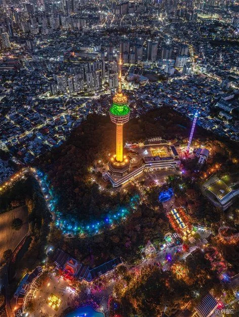
▲ 83타워와 이월드 일대를 밤에 내려다본 사진. 촬영 시기는 자료에 없고, 이미지 안에 "ⓒ 이월드" 표기가 있다. ⓒ 한국관광공사 · 공공누리 제3유형(변경금지)
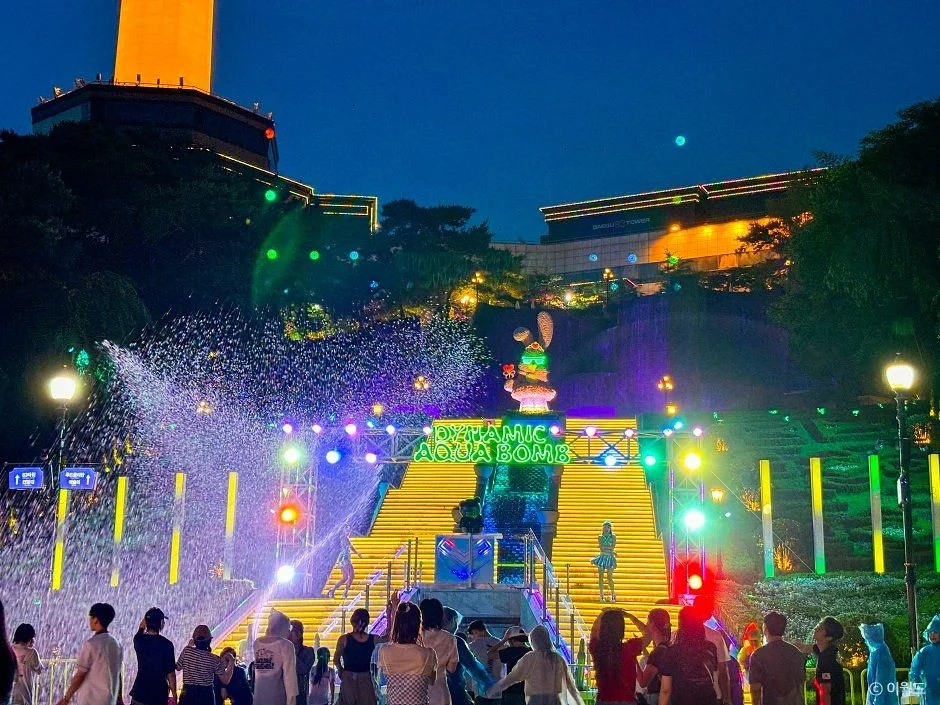
▲ 83타워 아래 계단형 무대에서 물줄기 연출을 즐기는 야간 모습. 촬영 시기는 자료에 없고 이미지 안에 "ⓒ 이월드" 표기가 있다. ⓒ 한국관광공사 · 공공누리 제3유형(변경금지)
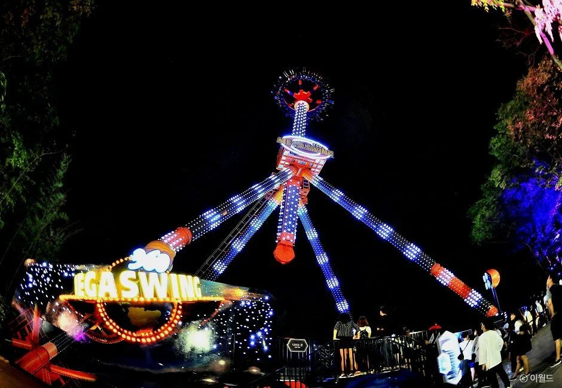
▲ 조명이 켜진 대형 스윙 어트랙션의 밤 모습. 촬영 시기는 자료에 없고 이미지 안에 "ⓒ 이월드" 표기가 있다. ⓒ 한국관광공사 · 공공누리 제3유형(변경금지)
6. 겨울 일루미네이션·빛 축제는 올해 공식 공지를 확인하지 못했다
이월드 공식 사이트에서 올해 겨울 일루미네이션이나 빛 축제 일정은 찾지 못했다. 공연&이벤트 달력에는 10월 24일~11월 6일 구간의 할로윈 프로그램만 있고, 83타워 공지 목록의 최근 항목은 2026년 9월 19일자 키즈 English 쿠킹 클래스 안내다.
| 항목 | 확인한 내용 | 근거 |
|---|---|---|
| 올해 겨울 일루미네이션·빛 축제 | 일정·기간 확인하지 못함 | 이월드 공연&이벤트, 83타워 공지 |
| 불꽃쇼 "이월드 인 더 스타즈" | 기간 2026.01.01~12.31, 달력 표시 구간에서는 10월 31일(토) 20시. 날씨에 따라 변경·취소 가능 | 이월드 불꽃쇼 안내 |
| 할로윈 공연 | 다크 원더랜드 매주 토 20:00, 퍼레이드 토·일·공휴일 14:00·17:30, 파티 토·일·공휴일 16:00 | 이월드 공연&이벤트 안내 |
| 아이스링크 운영 기간 | 요금표만 있고 올해 운영 기간은 확인하지 못함 | 이월드 이용요금 |
겨울 야간 장식은 지난 시즌 사진으로만 짐작할 수 있다. 아래 사진들은 과거 연출 모습이고 올해 일정과는 무관하다.
| 날짜·항목 | 확인한 내용 |
|---|---|
| 10월 24일(토) | 83타워 스카이웨이, 부메랑(어드벤처월드), 코코몽 관람차(매직월드) 운휴 |
| 10월 25일(일) | 부메랑, 코코몽 관람차 운휴 |
| 10월 26일~11월 6일 | 운휴 표시 없음(11월 1일부터는 운영시간도 비어 있음) |
| 83타워 이벤트 공지 | 지난해 10월 17일·11월 15일·12월 2일자 "월별 83타워 행사 소식"이 있고, 올해는 6월 13일자가 마지막 |
| 그 밖의 지난 공지 | "83타워 해돋이 행사 미진행 안내"(2024-12-13), "셔틀버스 중단 안내"(2025-11-01) — 제목만 확인 |
같은 날 운휴는 오늘 일정에서 스카이웨이가 빠진다는 뜻이라, 케이블카 이동을 전제로 동선을 짠 사람은 도보 계획으로 바꿔야 한다. 운휴 목록은 예고 없이 바뀔 수 있다고 공식 유의사항에 적혀 있어 당일 현장 확인이 필요하다.
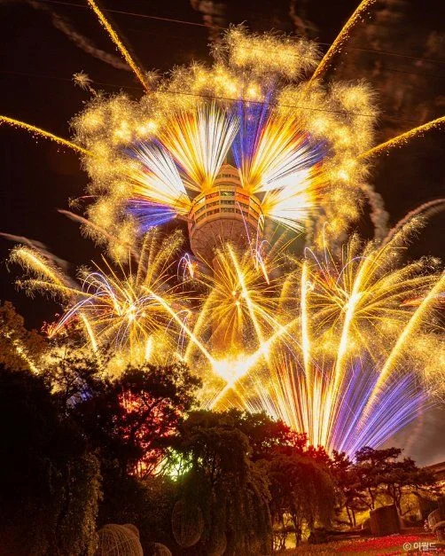
▲ 불꽃 사이로 83타워가 보이는 밤 사진. 촬영 시기는 자료에 없고, 이미지 안에 "ⓒ 이월드" 표기가 있다. ⓒ 한국관광공사 · 공공누리 제3유형(변경금지)
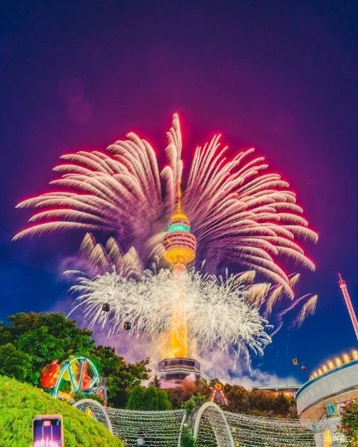
▲ 분홍·흰 불꽃이 타워 주변에 퍼진 모습. 올해 불꽃쇼 장면이 아닐 수 있으며 촬영 시기는 자료에 없다. 이미지 안에 "ⓒ 이월드" 표기가 있다. ⓒ 한국관광공사 · 공공누리 제3유형(변경금지)
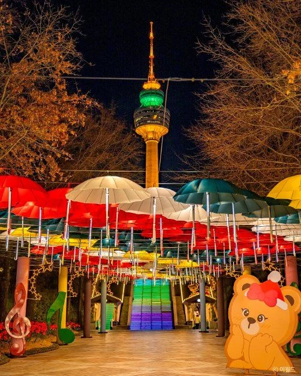
▲ 우산 장식과 83타워가 함께 보이는 야간 사진. 촬영 시기는 자료에 없고, 이미지 안에 "ⓒ 이월드" 표기가 있다. ⓒ 한국관광공사 · 공공누리 제3유형(변경금지)
▲ 크리스마스 장식 무대 앞 캐릭터와 관람객. 촬영 시기는 자료에 없고, 이미지 안에 "ⓒ 이월드" 표기가 있다. ⓒ 한국관광공사 · 공공누리 제3유형(변경금지)
7. 주차 5시간이면 27,000원 — 자유이용권 3,000원, 두류역 도보 5분
일반 요금으로 5시간 주차하면 27,000원(카프리즘 계산), 자유이용권 바코드를 찍으면 3,000원이다. 이월드는 주말·공휴일 주차장이 혼잡해 대중교통을 권장한다.
| 구분 | 요금 | 비고 |
|---|---|---|
| 일반 1시간 이내 | 3,000원 | 무료회차 30분+기본시간 30분 |
| 이후 10분당 | 1,000원 | 일 최대 50,000원 |
| 일반 3시간(계산) | 15,000원 | 3,000원+120분÷10×1,000원 |
| 일반 5시간(계산) | 27,000원 | 3,000원+240분÷10×1,000원 |
| 자유이용권(바코드) | 3,000원 | 밤 12시 이후 10분당 1,000원 적용 |
| 연간회원(바코드) | 2,000원 | 밤 12시 이후 10분당 1,000원 적용 |
| 83타워 고객 | 4시간 무료 | 애슐리·리미니·전시관 매장에서 등록, 3만 원 이상 구매 영수증 바코드 스캔, 4시간 경과 시 10분당 1,000원 |
자유이용권 주차가 일반보다 싼 것은 자유이용권 바코드를 정산기에 스캔하면 정액이 적용되는 구조이기 때문이다. 일반 요금의 10분 단위 올림 방식은 공식 표에 적혀 있지 않아 계산은 근사값이다. 중복 할인은 안 되고 83타워 영수증끼리는 합산할 수 있다. 정산 후 30분이 지나면 추가 요금이 붙는다(연간회원·자유이용권 고객 제외).
| 수단 | 안내 내용 |
|---|---|
| 지하철 2호선 | 문양방면 탑승 → 두류역 하차 → 15번 출구 이용 → 이월드(도보 5분) |
| 지하철 1호선 | 대곡방면 탑승 → 반월당역에서 2호선 환승(문양방면) → 두류역 15번 출구 |
| 시내버스 | 순환3-1 평일 9분·주말 12분, 간선623 11·14분, 간선452 14·18분, 달서4-1 18·21분, 간선503 11·11분, 간선653 16·19분, 서구1-1 15·19분 |
버스 표기는 이월드 교통안내에 적힌 분 단위 값으로 배차 간격으로 보이지만 해당 설명은 없다. 83타워 주차장은 오픈 시간에 맞춰 입차할 수 있고 오픈 전에는 이용할 수 없다고 안내되며, 영업 종료 후에는 입차가 제한된다. 일반 차량이 장애인 전용구역에 주차하면 10만 원(2시간 이상 12만 원) 과태료가 부과된다. 이월드 교통·주차 공식 안내 바로가기
| 상황 | 선택 | 근거 |
|---|---|---|
| 야경과 일몰만 보고 싶은 성인 1인(토요일) | 야간권 35,000원 + 전망대 17:15 전후 입장 | 일몰 17:39, 시민박명 종료 18:05. 전망대 할인 중복 여부는 현장 확인 |
| 어린이 동반 가족 | 야간권(어린이·청소년 33,000원)이 종일권보다 6,000~11,000원 저렴 | 어린이 종일 39,000원 vs 야간 33,000원. 퍼레이드·파티는 14~17:30대라 야간권으로는 놓침 |
| 노부모 동반 | 두류역 15번 출구 도보 5분 또는 83타워 주차 4시간 무료 활용 | 83타워 매장 3만 원 이상 영수증 바코드 시 4시간 무료. 임산부·경로자는 주간 자유이용권 25,000원(서류 지참) |
| 스케이트까지 타고 싶은 경우 | 토요일 17:00 이전 입장, 링크 19:00 입장 마감 전 이용 | 링크 토·공휴일 11:00~19:30, 평일·일요일 11:00~18:30 |
임산부·경로자 25,000원은 주간 자유이용권이라 야간권 35,000원보다도 10,000원 싸다. 노부모와 함께 일몰 전 전망대만 보려는 경우에는 이 요금과 전망대 경로 14,000원(65세 이상)을 합한 39,000원(카프리즘 계산)이 기준이 된다.
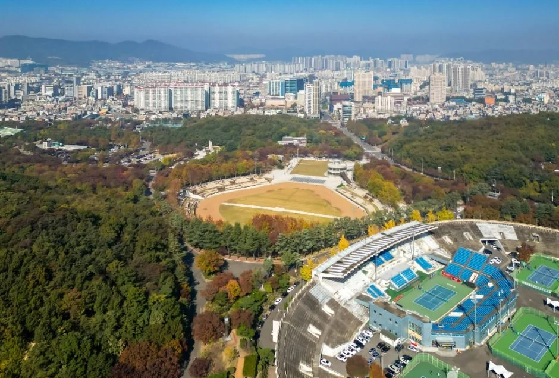
▲ 이월드와 인접한 두류공원 일대의 항공 사진(인근 사진). 단풍이 든 모습이며 촬영 연도는 자료에 없다. ⓒ 한국관광공사 · 공공누리 제1유형
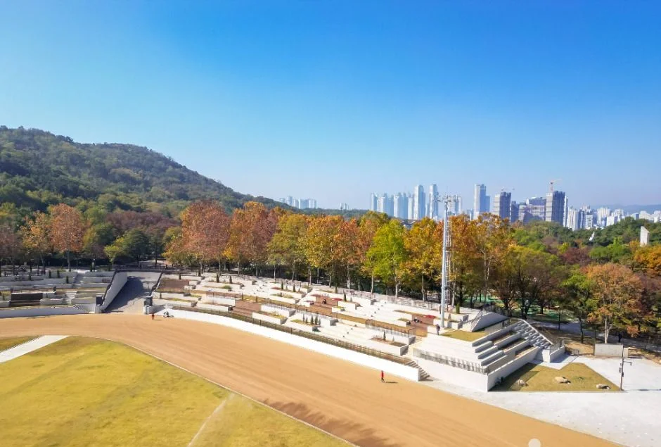
▲ 두류공원 경기장 스탠드와 단풍 든 숲(인근 사진). 촬영 연도는 자료에 없다. ⓒ 한국관광공사 · 공공누리 제1유형
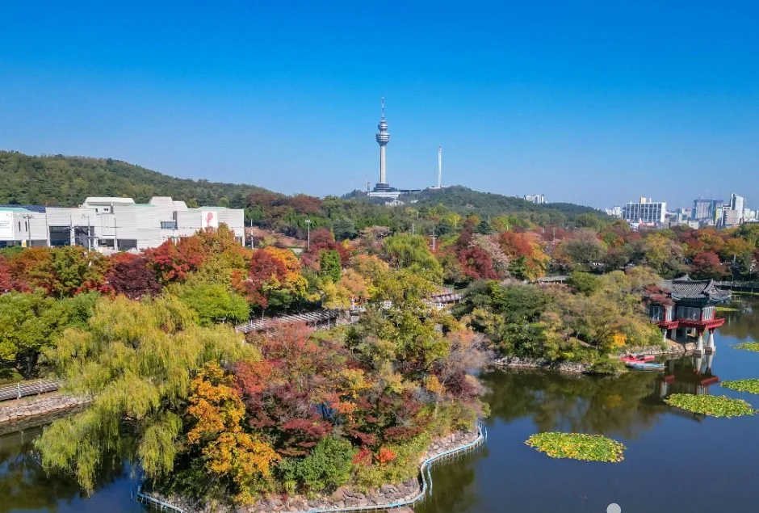
▲ 연못과 단풍 든 숲 너머로 멀리 83타워가 보이는 풍경. 촬영 장소는 자료명에 "이월드83타워"로만 표기돼 있다. ⓒ 한국관광공사 · 공공누리 제1유형
8. 대구 다른 야경·코스와 이어 보기
같은 날 대구 야경을 한 곳 더 보고 싶다면 앞산 쪽 기사를, 낮 시간을 채우고 싶다면 근대골목 반나절 코스를 참고하자. 수성못·앞산 대구 도심 가을 하루 코스 기사에 앞산 케이블카 운영시간(금·토·일·공휴일 21:00까지)과 일몰·야경 동선이 정리돼 있다. 낮 코스는 대구 근대골목 반나절 기사, 먼 거리 산 조망은 팔공산 케이블카 기사가 이어진다. 운영시간은 각 기사의 확인 시점 기준이므로 출발 전 다시 확인하자.
✅ 확인하지 못한 것·출발 전 체크
1) 11월 이후 이월드·83타워 운영시간(11~1월 달력 모두 시간 미표시, 재조회 결과도 같음) 2) 야간권이 83타워 전망대 50% 할인과 함께 적용되는지, 야간권 구매·입장 기준 시각 3) 올해 겨울 일루미네이션·빛 축제 일정 4) 83타워 아이스링크 올해 개장·폐장 기간(영업시간은 확인함) 5) 공휴일 83타워 운영시간. 문의: 이월드 종합안내 070-7549-8112.
9. 정리
이월드 10월 운영시간은 평일 10:00~21:00, 토·일 10:00~22:00이고, 어른 야간권 35,000원은 종일권보다 14,000원 싸지만 83타워 전망대(어른 18,000원)는 별도다. 10월 24일 일몰은 17:39로 17:00 야간권 시작 후 39분이 지나서야 해가 진다.
겨울 일루미네이션·빛 축제 올해 일정, 11월 이후 운영시간, 야간권과 전망대 할인의 중복 여부는 확인하지 못했다. 이 기사는 2026년 10월 24일 기준이므로 방문 전 이월드 공식 사이트나 070-7549-8112로 확인하자.